Validation by Reproducing Published Figures
Gosuke Homma
2026-10-08
Source:vignettes/bbssr-published-figures.Rmd
bbssr-published-figures.RmdPurpose
This vignette redraws fifteen figures of four publications on binary
endpoints, blinded sample size re-estimation and exact tests from values
computed with bbssr: Figures 1 to 4 of Friede and Kieser (2004), Figures
21.1 to 21.4 and 23.1 to 23.3 of Kieser (2020), Figures 1 to 3 of
Friede, Mitchell and Mueller-Velten (2007) and Figure 2 of Boschloo
(1970). A figure carries the operating characteristics of a design over
a whole range of parameters, so its agreement with the original checks
the package at many more points than the tables that
reproduce-published.R compares (see the validation
vignette). Where the text of a publication states values that are read
from a figure, they are compared with the recomputed values.
The original figures are not reproduced here; they are to be compared with the publications. The axis ranges, tick marks, line types and symbols follow the original figures, so that a figure can be laid next to its original. Each section states how the design was specified, what the publication leaves open, and where the figure departs from the original.
The values take about half an hour to compute. They are computed by
the script reproduce-figures.R and stored in the folder
extdata/published-figures of the package, and the figures
are drawn by the functions in plot-figures.R; both scripts
are installed in the folder given by
system.file('reproduce', package = 'bbssr'). The last
section recomputes some of the stored values with the installed version
of the package.
Friede and Kieser (2004)
All four figures use the two-sided chi-squared test at level 0.05 and the target power 0.8. The sample size comes from formula (1) of the article, which uses the variance under the null hypothesis, with each group rounded up, and the recalculation is unrestricted with an upper bound of twice the required total sample size . For a figure drawn against , the assumed difference is the one for which formula (1) gives at the overall rate , so that the recalculated total is as in formula (2) of the article.
Figure 1 (p. 272)
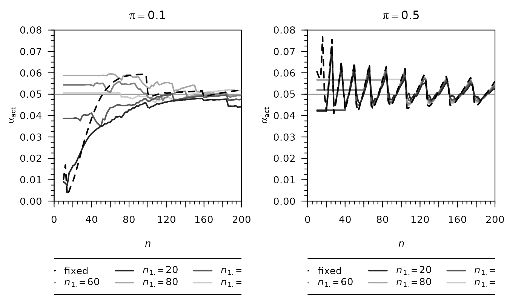
Actual type I error rate against the observed total sample size (fixed design, dashed) or the required total sample size (internal pilot study design with patients in the pilot, solid), for the overall rates 0.1 and 0.5 and equal groups. The figure agrees with the original, including the step of the fixed design near for and the saw-tooth pattern for .
Figure 2 (p. 273)
Minimum, mean and maximum of the actual type I error rate against the pilot size , over the overall rates 0.05, 0.1, 0.2, …, 0.5 and the required totals 30, 40, …, 300 (168 combinations) for the internal pilot study design, and over the same rates and the observed totals of at least for the fixed design. The caption of the article draws the internal pilot study design dashed and the fixed design solid, but the figure itself draws them the other way round: the dashed minimum of about 0.005 at occurs only in the fixed design, whose recomputed minimum there is 0.0051, while the minimum of the internal pilot study design is 0.0136. The figure above follows the original figure, with the fixed design dashed, and with this assignment all six lines of each panel agree with the original.
The article states that the largest type I error rate is below 0.06 in all scenarios for , and for for . The recomputed maxima are 0.0563 for , 0.0595 for and , and 0.0649 for and .
Figure 3 (p. 274)
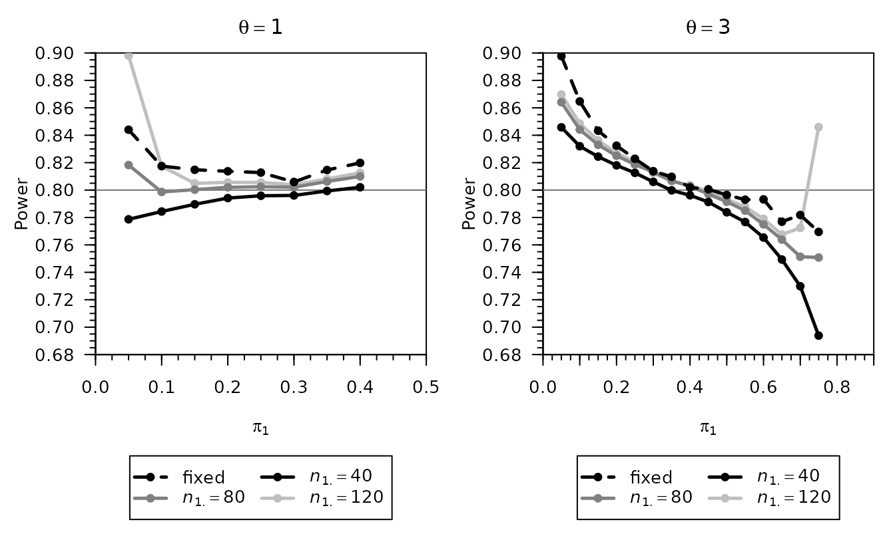
Actual power against the response rate
for the alternative
,
the fixed design with the sample size of formula (1) at the true rates
(dashed) and the internal pilot study design with
,
80 and 120. The larger group receives the larger rate
,
the choice under which Table I of the article is reproduced by
reproduce-published.R; the points of the figure at the
rates of Table I are the values of that table. The figure agrees with
the original, including the rise at
for
and
.
Figure 4 (p. 277)
Actual type I error rate in the depression trial of Section 5 of the article: the fixed design with 122 patients per group against the overall rate (left), and the internal pilot study design with and a pilot of 120 patients against the required total (right). Both panels agree with the original.
Kieser (2020), Chapter 21
The figures use the normal approximation test, which is equivalent to the chi-squared test, at the one-sided level 0.025 and the target power 0.8, with the sample size of formula (21.3) of the book and unrestricted recalculation. Group 1 of bbssr is the experimental group E, so the allocation ratio of the book is the argument r of bbssr. Example 21.1 of the book (the BACLOREA trial) assumes the rates and , so the overall rate , and gives and a pilot of patients.
Figure 21.1 (p. 229)
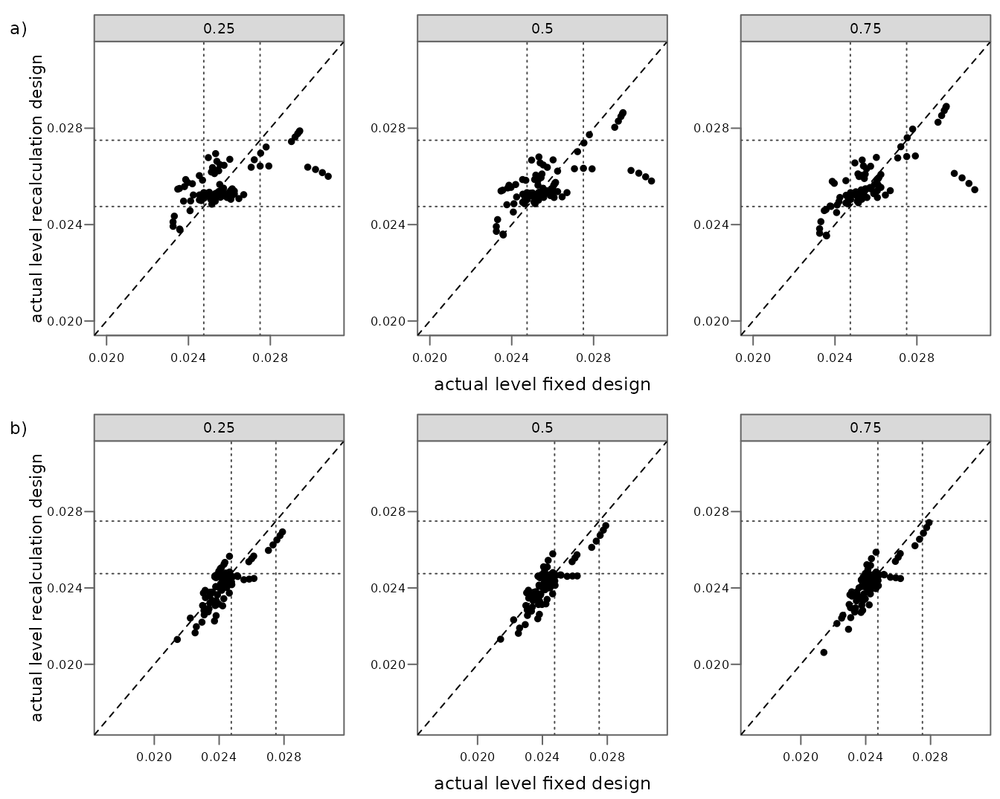
Actual level of the recalculation design against that of the fixed design for the alternatives , 0.20, 0.25 and 0.30, the assumed overall rates and pilots of 25, 50 and 75 per cent of the fixed sample size, for (a) and (b). The book does not state three details. The levels are evaluated here at the assumed overall rate , the alternative is , and the pilot has patients in group C for the fraction and times as many in group E, which gives the pilot of Example 21.1. The dotted lines are drawn where the book draws them, at 0.02475 and 0.0275, although its caption gives 0.0225 and 0.0275.
| Design | Book | bbssr | Agrees | Stop after the pilot | Agrees |
|---|---|---|---|---|---|
| r = 1, fixed design: mean | 0.0257 | 0.025722 | yes | ||
| r = 1, fixed design: minimum | 0.0233 | 0.023247 | no | ||
| r = 1, fixed design: maximum | 0.0308 | 0.030828 | yes | ||
| r = 1, recalculation design: mean | 0.0257 | 0.025667 | yes | 0.025646 | no |
| r = 1, recalculation design: minimum | 0.0235 | 0.023533 | yes | 0.023533 | yes |
| r = 1, recalculation design: maximum | 0.0289 | 0.028904 | yes | 0.028904 | yes |
| r = 1, recalculation design, pilot 25%: mean | 0.0256 | 0.025648 | yes | 0.025583 | yes |
| r = 1, recalculation design, pilot 25%: minimum | 0.0238 | 0.023777 | yes | 0.023777 | yes |
| r = 1, recalculation design, pilot 25%: maximum | 0.0279 | 0.027889 | yes | 0.027889 | yes |
| r = 1, recalculation design, pilot 50%: mean | 0.0257 | 0.025677 | yes | 0.025678 | yes |
| r = 1, recalculation design, pilot 50%: minimum | 0.0236 | 0.023570 | yes | 0.023570 | yes |
| r = 1, recalculation design, pilot 50%: maximum | 0.0286 | 0.028644 | yes | 0.028644 | yes |
| r = 1, recalculation design, pilot 75%: mean | 0.0257 | 0.025677 | yes | 0.025677 | yes |
| r = 1, recalculation design, pilot 75%: minimum | 0.0235 | 0.023533 | yes | 0.023533 | yes |
| r = 1, recalculation design, pilot 75%: maximum | 0.0289 | 0.028904 | yes | 0.028904 | yes |
| r = 3, fixed design: mean | 0.0243 | 0.024286 | yes | ||
| r = 3, fixed design: minimum | 0.0214 | 0.021421 | yes | ||
| r = 3, fixed design: maximum | 0.0279 | 0.027905 | yes | ||
| r = 3, recalculation design: mean | 0.0241 | 0.024168 | no | 0.024048 | no |
| r = 3, recalculation design: minimum | 0.0174 | 0.020622 | no | 0.017395 | yes |
| r = 3, recalculation design: maximum | 0.0274 | 0.027421 | yes | 0.027421 | yes |
The table lists the mean, minimum and maximum that the book reports for the figure, after rounding to four decimals; 18 of the 21 values agree. For the scatter and all values of the recalculation design agree. The minimum of the fixed design is 0.023247, which rounds to 0.0232 rather than to the 0.0233 of the book; it lies 2.8 below the rounding boundary, and the reason for the difference is not known.
For
the recalculation design departs from the book: the book reaches the
minimum 0.0174 at the smallest pilots, while bbssr gives 0.0206. The
difference arises from the interim outcomes for which the recovered rate
of group C,
,
is negative. The book does not say how such outcomes are treated. bbssr
truncates the Bernoulli variance of that group at zero and re-estimates
the sample size from the remaining terms of formula (21.5). If instead
the trial stops after the pilot for such outcomes, the points that lie
far below the diagonal in the panels of 25 and 50 per cent for
,
and an isolated point in the panel of 25 per cent for
,
move to their positions in the book (figure below), and the minimum
0.0174 is reproduced. The last two columns of the table give the values
under this rule. With it the means of the whole figure are 0.025646 for
and 0.024048 for
,
which round to one unit below the values of the book and lie 3.9
and 2.1
below the rounding boundaries, so neither rule reproduces all values.
The levels under the rule that stops after the pilot are computed in
reproduce-figures.R from the final sample sizes of bbssr,
and agree with an independent computation in Python
(tools/reference/check_kieser_2020_pilot_stop.py in the
source repository).
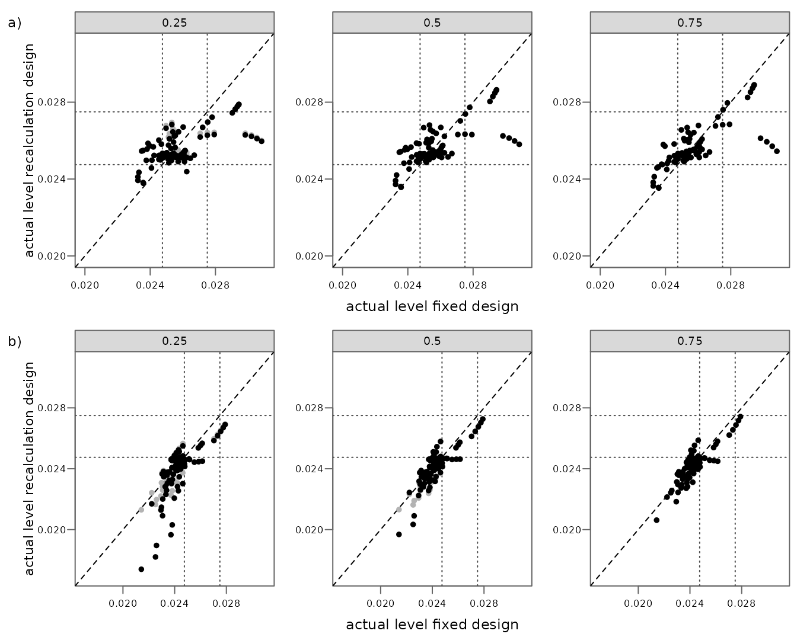
The levels under bbssr (grey) and under the rule that stops after the pilot (black). For the design of Example 21.1, and so for Figures 21.2 to 21.4, the two rules give the same levels, as the same Python script confirms over the overall rates of Figure 21.2 (a): the interim outcomes with a negative recovered rate lead to a recalculated sample size below the pilot, so the trial ends with the pilot under both rules.
Figure 21.2 (p. 231)
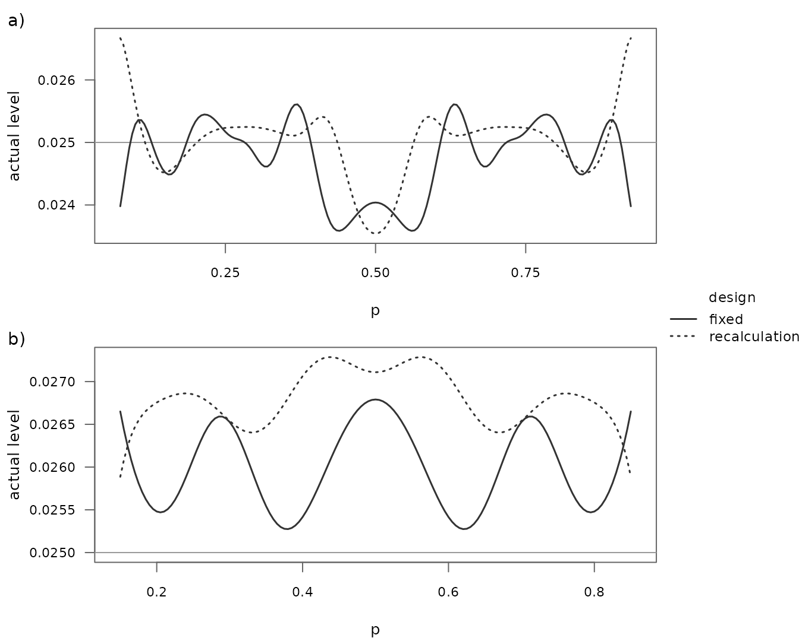
Actual level against the overall rate for Example 21.1 (a) and for the same design with , and a pilot of patients (b). The book varies from 0.01 to 0.99 in steps of 0.005 and shows the rates for which the assumed rates of both groups lie in the unit interval, in (a) and in (b). The mean, minimum and maximum that the book reports are computed over these ranges.
| Design | Book | bbssr | Agrees |
|---|---|---|---|
| a) fixed design: mean | 0.0248 | 0.024752 | yes |
| a) fixed design: minimum | 0.0236 | 0.023586 | yes |
| a) fixed design: maximum | 0.0256 | 0.025609 | yes |
| a) recalculation design: mean | 0.0250 | 0.025010 | yes |
| a) recalculation design: minimum | 0.0235 | 0.023543 | yes |
| a) recalculation design: maximum | 0.0267 | 0.026668 | yes |
| b) fixed design: mean | 0.0260 | 0.025991 | yes |
| b) fixed design: minimum | 0.0253 | 0.025275 | yes |
| b) fixed design: maximum | 0.0268 | 0.026790 | yes |
| b) recalculation design: mean | 0.0268 | 0.026796 | yes |
| b) recalculation design: minimum | 0.0259 | 0.025886 | yes |
| b) recalculation design: maximum | 0.0273 | 0.027286 | yes |
All 12 of the 12 values agree, and the curves agree with the original figure.
Figure 21.3 (p. 233)
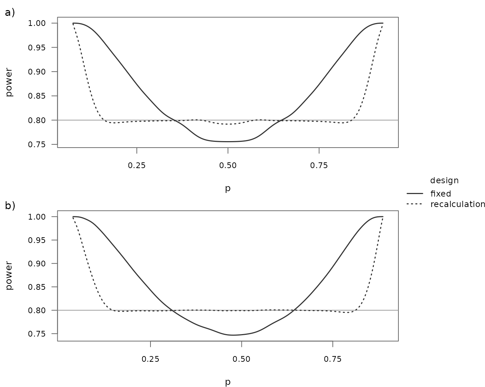
Power against the overall rate for the fixed design and the recalculation design of Example 21.1 (a) and of the same design with (b). For the book does not give the sample sizes. With the rates of Example 21.1 kept, so that the overall rate becomes , formula (21.3) gives and , and with a pilot of half of each group, patients, the figure agrees with the original, where the power of the fixed design falls below 0.8 near this overall rate. A design that keeps instead gives a curve of the fixed design that lies above the original.
Figure 21.4 (p. 234)
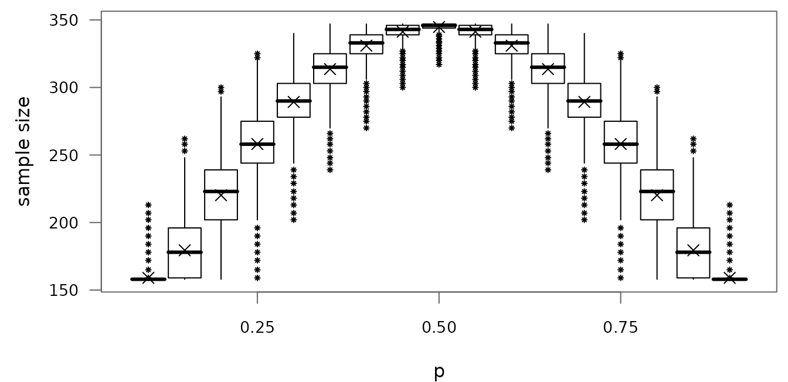
Distribution of the recalculated total sample size of Example 21.1 against the overall rate , with the total rounded up as the book does. The figure is drawn from the exact distribution: the box spans the quartiles (the smallest totals whose cumulative probability reaches 0.25 and 0.75), the bar marks the median, the cross the mean, and the whiskers reach the most extreme totals within 1.5 interquartile ranges of the box. The book does not say whether its box plots come from simulated trials; the asterisks mark the totals beyond the whiskers whose probability is at least , which spans about the same ranges as the asterisks of the book (for example up to 213 at ).
For the book gives the quartiles 303 and 325 and the median 315, and for and the medians 258 and 343 and the interquartile ranges 31 and 7. The recomputed values are 303, 325 and 315, and 258, 343, 31 and 7.
Kieser (2020), Chapter 23
Example 23.1 of the book (the FreezeAF trial) uses the test of
Farrington and Manning (1990) of the non-inferiority hypothesis
with the margin
at the one-sided level 0.025, the equal assumed rates
and the target power 0.8. Formula (23.2) gives
patients in total, the pilot has 100 patients, and the recalculation is
unrestricted. The recalculated total therefore lies between the 100
patients of the pilot and the 344 patients that formula (23.2) gives at
the overall rate 0.5, the bounds that the book points out. In bbssr this
design is Test = 'Farrington-Manning',
margin = 0.15, Delta.A = 0,
ss.method = 'standard' and
n.interim = c(50, 50), with group 1 the experimental group
E and each group rounded up, as in the reproduction of the values of
Example 23.1 by reproduce-published.R.
Figure 23.1 (p. 251)
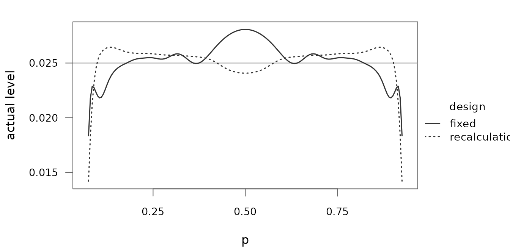
Actual level on the boundary of the null hypothesis, and , against the overall rate in , for the fixed design with patients and the internal pilot study design. The book states that it varied in steps of 0.05, but the maximum it reports at lies only on a grid with steps of 0.005, which is the grid used here.
| Value | Book | bbssr | Agrees |
|---|---|---|---|
| fixed design: maximum level | 0.0281 | 0.028078 | yes |
| recalculation design: maximum level | 0.0264 | 0.026449 | yes |
| recalculation design: rate of the maximum | 0.8650 | 0.865000 | yes |
The level is symmetric about
,
so the maximum of the recalculation design is attained at
as well. 3 of the 3 values agree, and the curves agree with the original
figure. The adjusted levels that the book derives from this figure are
reproduced by reproduce-published.R, and the
bbssr-type1-error vignette uses the example to illustrate
the control of the type I error rate within a confidence interval.
Figure 23.2 (p. 252)
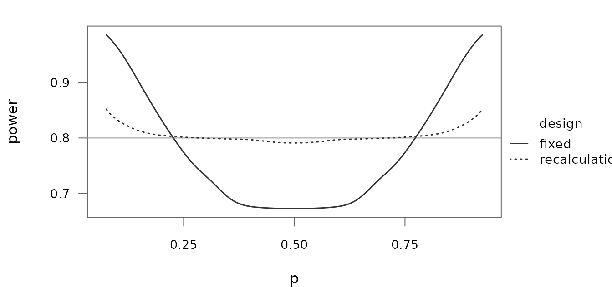
Power for the equal true rates . The power of the fixed design falls to 0.6729 near , while the power of the recalculation design lies between 0.7911 and 0.8517. The figure agrees with the original.
Figure 23.3 (p. 252)
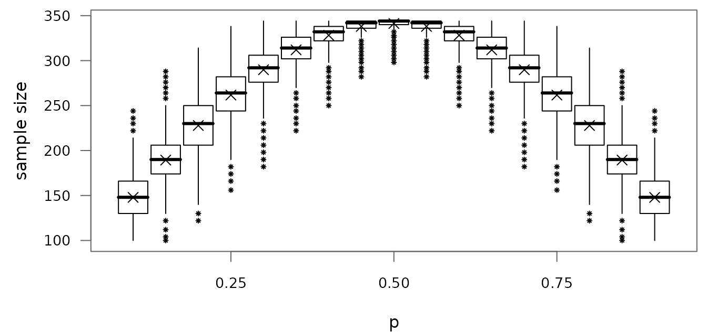
Distribution of the recalculated total sample size against the overall rate , drawn from the exact distribution as Figure 21.4. The book does not state the true rates, and the figure uses equal rates , as for the power in Figure 23.2. The caption of the book refers to Example 21.1, but its text describes this figure with the bounds of Example 23.1, and the recomputed totals lie between 100 and 344. The boxes and the asterisks agree with the original to within the accuracy with which the figure can be read. At a few rates a whisker ends one attainable total nearer to or farther from the box than in the original. These are rates at which a total lies close to 1.5 interquartile ranges from the box, so that the end of the whisker depends on how the quartiles are computed, and the book does not say whether its box plots come from simulated trials.
Friede, Mitchell and Mueller-Velten (2007)
The tests have the one-sided level 0.025 and the margin 0.1, the
target power is 0.8 and the assumed treatment difference is 0. The
article writes
for the allocation, with group 1 the experimental group, so
in bbssr, and
for the treatment difference. The fixed sample sizes come from formula
(1) (Blackwelder) or (2) (Farrington and Manning) with each group
rounded up, the internal pilot study has half of each group rounded to
the nearest integer, and the re-estimated groups are rounded to the
nearest integer, as in the reproduction of Tables 2 and 3 of the article
by reproduce-published.R.
Figure 1 (p. 908)
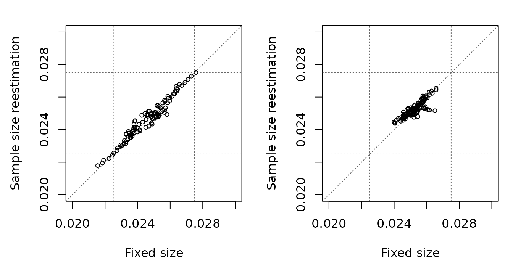
Type I error rate of the re-estimation design against that of the fixed design for the test of Blackwelder (left) and of Farrington and Manning (right), on the boundary of the null hypothesis () at the assumed overall rate, for and the assumed overall rates 0.30, 0.31, …, 0.70 (123 designs per test). The points of the test of Blackwelder lie along the diagonal between 0.0215 and 0.0276, as in the original. The points of the test of Farrington and Manning lie between 0.0240 and 0.0266, and those of the original between about 0.0238 and 0.0264, so the cloud agrees in its shape but not exactly at its edges.
The article does not simulate. It sums over all outcomes and bounds
the omitted terms, so that each plotted level lies within 0.00005 of the
exact level (Section 4.3 of the article), and the differences are not
simulation error. The level of the test changes by several units in the
fourth decimal when a group gains or loses one patient, and the article
does not state how the sample size of formula (2) is split between the
groups or how the pilot and the re-estimated sample sizes are rounded.
For
and
,
Table 2 of the article gives only the total of 815 patients. bbssr
allocates them as 611 + 204, for which the level of the fixed design is
0.0266. One patient fewer in group 1 gives 0.0262, and the other splits
610 + 205 and 612 + 203 give 0.0264 and 0.0266. The levels of all fixed
designs of the figure, and the levels of these four splits, agree with
an independent computation in Python
(tools/reference/check_friede_2007_figure1.py in the source
repository), which finds the restricted maximum likelihood estimates by
bisection on the score equation rather than by the closed form of
Farrington and Manning (1990).
Figure 2 (p. 909)
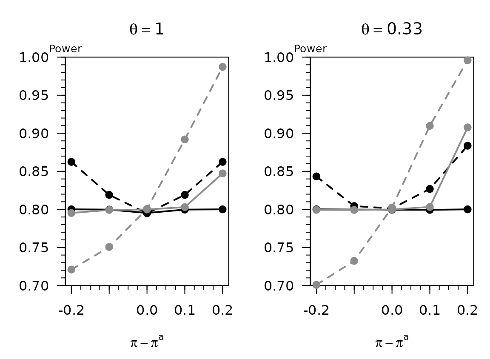
Power of the test of Farrington and Manning against the difference between the true and the assumed overall rate, for the fixed design (dashed) and the re-estimation design (solid), (black) and (grey), and the correctly specified difference . The figure agrees with the original.
Boschloo (1970)
Figure 2 (p. 3)
Unconditional level of significance of Fisher’s test of
against
with
and
at the conditional level
,
with
,
where
is the conditional size given the total number of successes
,
together with
for
and the level
of Fisher’s test at the raised conditional level
.
The circles mark the maximum of
,
at
,
for every
;
the caption of the article calls them crosses, but the figure draws
small circles. The largest values of
and
are 0.0203 and 0.0435, and the figure agrees with the original.
Rejecting with Fisher’s test at the level 0.09 is the same as rejecting
with the Boschloo test at the level 0.05, and
reproduce-figures.R confirms that the two levels agree.
Agreement of the stored values with the package
The stored values were computed with bbssr by
reproduce-figures.R. The code below recomputes some of
them, from the designs that take little time, with the installed version
of the package, and stops if a stored value differs from the recomputed
one by more than
.
The designs of Friede et al. (2007) take several seconds each and are
not recomputed here; the same computations reproduce Tables 2 and 3 of
the article in reproduce-published.R.
fk1 <- read_fig(dir, 'friede-kieser-2004-figure1.csv')
fk4 <- read_fig(dir, 'friede-kieser-2004-figure4-recalculation.csv')
K <- (qnorm(0.975) + qnorm(0.8))^2
# Friede and Kieser (2004), Figure 1: pi = 0.1, n = 60 and a pilot of 20 patients
fk1.ips <- BinaryPowerBSSR(
p = 0.1, Delta.A = sqrt(4 * K * 0.1 * (1 - 0.1) / 60), Delta.T = 0, N1 = 30, N2 = 30,
n.interim = c(10, 10), r = 1, alpha = 0.05, tar.power = 0.8, Test = 'Chisq',
alternative = 'two.sided', ss.method = 'null.variance', rounding = 'friede-kieser',
N.max = 120
)$power.BSSR
# Friede and Kieser (2004), Figure 4: required total n = 100
fk4.row <- fk4[fk4$n == 100, ]
fk4.ips <- BinaryPowerBSSR(
p = fk4.row$pi, Delta.A = 0.15, Delta.T = 0, N1 = 122, N2 = 122, n.interim = c(60, 60),
r = 1, alpha = 0.05, tar.power = 0.8, Test = 'Chisq', alternative = 'two.sided',
ss.method = 'null.variance', rounding = 'friede-kieser', N.max = 200
)$power.BSSR
# Kieser (2020), Figure 21.1: r = 3, pA = 0.30, Delta = 0.30 and a pilot of 25 per cent
k1.row <- k1[k1$r == 3 & k1$pA == 0.3 & k1$Delta == 0.3 & k1$fraction == 0.25, ]
k1.ss <- BinarySampleSize(0.3 + 0.3 / 4, 0.3 - 3 * 0.3 / 4, 3, 0.025, 0.8, 'Chisq',
method = 'standard')
k1.res <- BinaryPowerBSSR(
p = 0.3, Delta.A = 0.3, Delta.T = 0, N1 = k1.ss$N1, N2 = k1.ss$N2,
n.interim = c(3 * ceiling(k1.ss$N2 / 4), ceiling(k1.ss$N2 / 4)), r = 3, alpha = 0.025,
tar.power = 0.8, Test = 'Chisq', ss.method = 'standard'
)
# Kieser (2020), Figure 21.2 b: the overall rate 0.5
k2.row <- k2[k2$Delta == -0.30 & abs(k2$p - 0.5) < 1e-9, ]
k2.res <- BinaryTypeIErrorBSSR(
Delta.A = -0.30, N1 = 39, N2 = 39, n.interim = c(20, 20), r = 1, alpha = 0.025,
tar.power = 0.8, Test = 'Chisq', alternative = 'less', ss.method = 'standard',
theta = k2.row$p, maximize = 'grid'
)
# Kieser (2020), Figure 23.1: the overall rate 0.865
k23.row <- k23.1[abs(k23.1$p - 0.865) < 1e-9, ]
k23.res <- BinaryTypeIErrorBSSR(
Delta.A = 0, N1 = 122, N2 = 122, n.interim = c(50, 50), r = 1, alpha = 0.025,
tar.power = 0.8, Test = 'Farrington-Manning', ss.method = 'standard', margin = 0.15,
theta = 0.865, maximize = 'grid'
)
# Boschloo (1970), Figure 2: p = 0.5
bo.row <- bo[abs(bo$p - 0.5) < 1e-9, ]
check <- data.frame(
Value = c('FK2004 Figure 1', 'FK2004 Figure 4', 'Kieser Figure 21.1, fixed',
'Kieser Figure 21.1, recalculation', 'Kieser Figure 21.2, fixed',
'Kieser Figure 21.2, recalculation', 'Kieser Figure 23.1, fixed',
'Kieser Figure 23.1, recalculation', 'Boschloo Figure 2, alpha',
'Boschloo Figure 2, alpha_gamma'),
Stored = c(fk1$pilot.20[fk1$pi == 0.1 & fk1$n == 60], fk4.row$level, k1.row$fixed,
k1.row$ips, k2.row$fixed, k2.row$recalculation, k23.row$fixed,
k23.row$recalculation, bo.row$alpha, bo.row$alpha.gamma),
Recomputed = c(fk1.ips, fk4.ips, k1.res$power.TRAD, k1.res$power.BSSR,
k2.res$TIE.TRAD, k2.res$TIE.BSSR, k23.res$TIE.TRAD, k23.res$TIE.BSSR,
BinaryPower(0.5, 0.5, 15, 10, 0.05, 'Fisher')$Power,
BinaryPower(0.5, 0.5, 15, 10, 0.09, 'Fisher')$Power)
)
check$Difference <- abs(check$Stored - check$Recomputed)
knitr::kable(check, digits = 12)| Value | Stored | Recomputed | Difference |
|---|---|---|---|
| FK2004 Figure 1 | 0.03686087 | 0.03686087 | 0 |
| FK2004 Figure 4 | 0.05009993 | 0.05009993 | 0 |
| Kieser Figure 21.1, fixed | 0.02142053 | 0.02142053 | 0 |
| Kieser Figure 21.1, recalculation | 0.02130180 | 0.02130180 | 0 |
| Kieser Figure 21.2, fixed | 0.02679047 | 0.02679047 | 0 |
| Kieser Figure 21.2, recalculation | 0.02710920 | 0.02710920 | 0 |
| Kieser Figure 23.1, fixed | 0.02376426 | 0.02376426 | 0 |
| Kieser Figure 23.1, recalculation | 0.02644929 | 0.02644929 | 0 |
| Boschloo Figure 2, alpha | 0.02016771 | 0.02016771 | 0 |
| Boschloo Figure 2, alpha_gamma | 0.04336041 | 0.04336041 | 0 |
References
Boschloo, R. D. (1970). Raised conditional level of significance for the 2 × 2-table when testing the equality of two probabilities. Statistica Neerlandica, 24, 1-9.
Farrington, C. P. and Manning, G. (1990). Test statistics and sample size formulae for comparative binomial trials with null hypothesis of non-zero risk difference or non-unity relative risk. Statistics in Medicine, 9, 1447-1454.
Friede, T. and Kieser, M. (2004). Sample size recalculation for binary data in internal pilot study designs. Pharmaceutical Statistics, 3, 269-279.
Friede, T., Mitchell, C. and Mueller-Velten, G. (2007). Blinded sample size reestimation in non-inferiority trials with binary endpoints. Biometrical Journal, 49, 903-916.
Kieser, M. (2020). Methods and Applications of Sample Size Calculation and Recalculation in Clinical Trials. Springer.